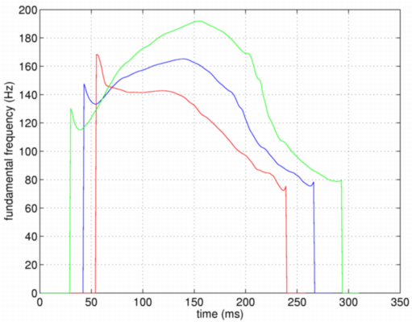
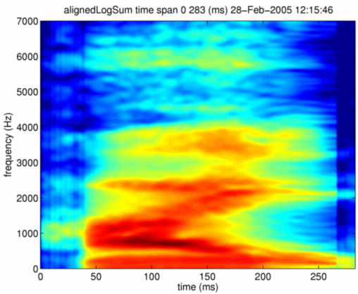
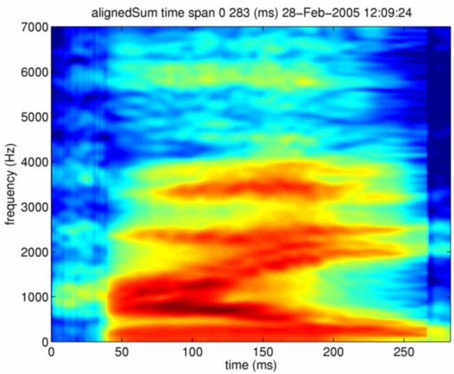
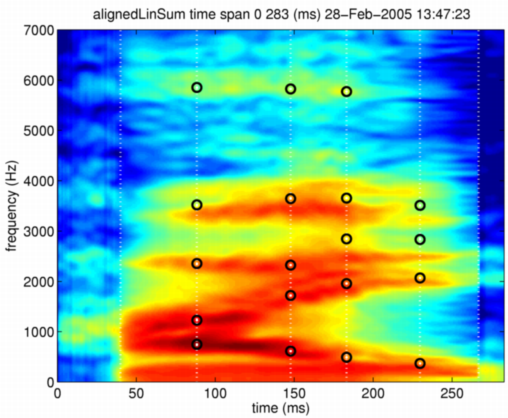

| | | STRAIGHTパラメタと特徴点の位置情報のみを用いるモーフィング | Contents | Index |
モーフィングの次の拡張は、時間軸の整合です。 まだ周波数軸の整合を行っていませんので，最終形態ではありません。 しかし、ここまでで、かなり自然な音がし始めます。 使う関数はtimeAlignedDirectSTRAIGHTmorphingです。 引数の意味は、前と同じです。 最初と次の引数が混合すべきMオブジェクトを表し、 三番目の引数が、二番目のMオブジェクトの混合比率 （合計が1になるように混合されます）を表し、 最後の引数が混合の方法を表します。 混合の方法は、今のところlinearとlogを用意してあります。
mObjectdmy = timeAlignedDirectSTRAIGHTmorphing(neutralHai,angryHai,0.5,'log');
時間軸は、この版で最終的なモーフィングになっています。 一次元のパラメタである基本周波数は、特徴点の時刻を利用して、 区分的一次関数により補間されます。 この例では、赤：0、青：0.5、緑：1で、異なった モーフィング率による軌跡を同一の図面に表示しています。

この時のモーフィングされたスペクトログラムを示します。 時間軸を整合させない場合と比較すると、フォルマントの遷移の軌跡が 実際の音声に近くなっていることが分かります。

この関数の出力もMオブジェクトなので、合成関数を使って音声にすることができます。 こうして時間軸を整合させたモーフィングから合成した音声は， 前の例よりも、実際の声に近づいているように感じられます。 混合方法をlinearにした場合のスペクトログラムを以下に示します。 この場合には、フォルマント遷移部分にまだ二つのフォルマントが重なっていることが 分かります。

モーフィングの結果、特徴点も移動します。以下の方法で、上で求められたMオブジェクトの特徴点を表示させてみましょう。
displayMobject(mObjectdmy,'anchorTimeLocation','alignedLinSum'); axis([0 283 0 7000])
移動は、直線補間を用いて実装してあります。 周波数の変形が大きな場合には、ERB尺度の上で補間を考えた方が良いかも知れません。 linearで混合されたスペクトログラムの上に、こうして移動された特徴点を重ねたものを、 以下に示します。 混合されたスペクトログラムそのものの特徴となる位置と、 こうして移動された特徴点は、うまく重なっていません。 これは、ここまででは、十分に自然なモーフィングが実装できていないことを示していると 解釈することもできます。

| | | STRAIGHTパラメタと特徴点の位置情報のみを用いるモーフィング | Contents | Index |